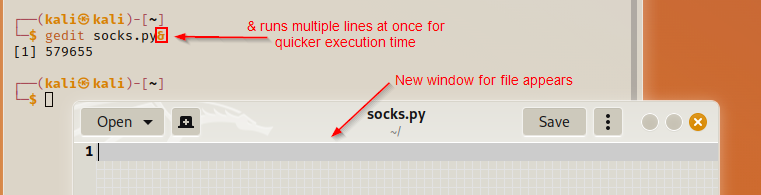

Sockets
Sockets are used to connect two nodes together. In this session we will use a socket to connect to a port of an IP address. Sockets will come into play as a pen-tester to be able to reach out to a specific port and send a'n exploit to the target.
We will create a simple socket script which will allow us to connect to an open port.
First we will create a Python file with gedit. Please note we can name our file anything apart from "socket" otherwise the file won't run - it will thijnk we are trying to execute Python's socket module.
For the purpose of this session I will name the file socks.py.
gedit socks.py&

A new window will appear for you to start adding scripts to your file.
The first thing we do is to declare a shebang (#!) to tell the kernal that a Python interpreter is needed for this script.
We will tell the program to locate the Python application in the bin directory and then run our socks.py file.
#!/bin/python3

Add shebang to file
We import the socket module then create our local host and port variables; we set the localhost (HOST) variable to your machine's local host then create your own port number.

Your port can be any number you want
socket.AF_INET connects to IPv4 IP addresses and socket.SOCK_STREAM is referencing a port. This script is now ready to establish a connection with the port via the host address provided. We can run this code to see what we get. In order to run the code, firstly we want to be able to set up a way where we can listen in or view the traffic in the port we have created using a feature called netcat.
We will now open a new terminal to create a listening port using netcat. We will be listening in to the port we have created in the Python script.
nc -nvlp 7777

-nvlp allows netcat to listen a port
When we run our Python file, we will establish a connection to our 7777 port via our local host. Because we have the netcat running, this will be listening out to any calls being made on the port and will pick up our connection.
Run script

Listening with netcat

It has picked up a connection from our local host
Now that we have checked the connection and it works, we can go back to our script to create our exploit because it doesn't do anything as of now.
From this we have built a simple script that connects two nodes. In the next lesson we will use this script to create a port scanner.